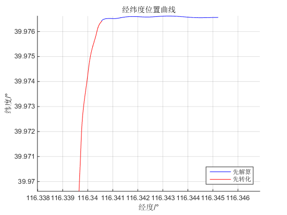
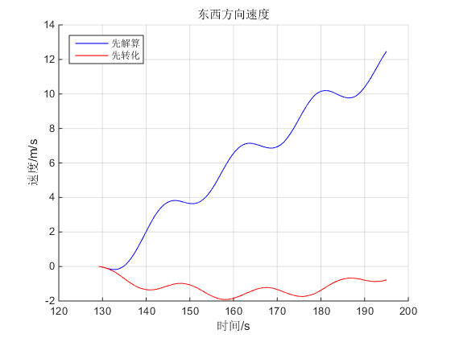
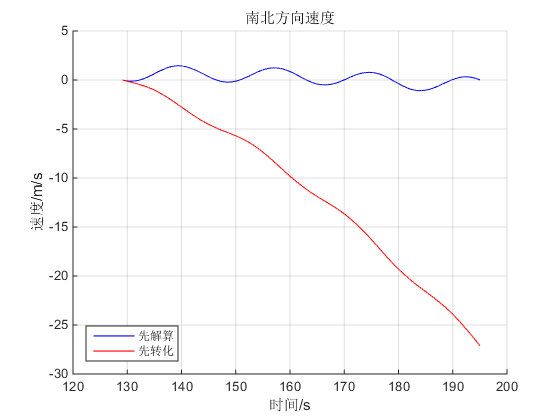
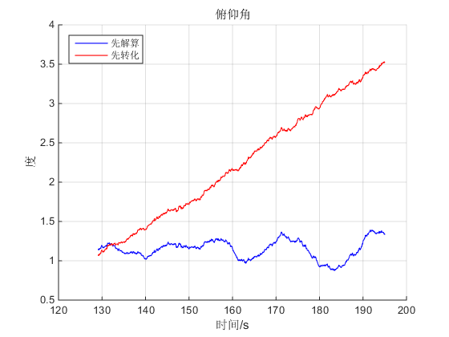
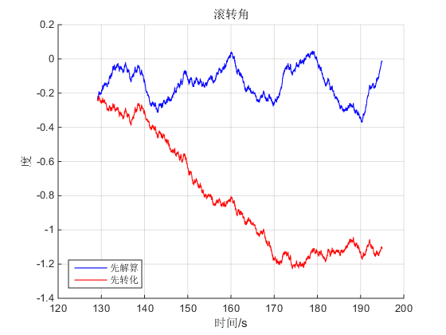
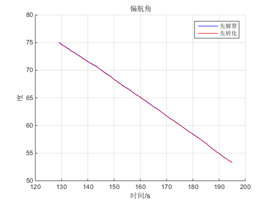

Contents
clc;clear;
读取数据并储存
data = load('5第六组实验数据.mat');
lengthTotalData = 97500;
lengthStill = 64550;
lengthDynamic = lengthTotalData - lengthStill;
fibbx(1,:)=data.temp_data(:,1)*9.80;
fibby(1,:)=data.temp_data(:,2)*9.80;
fibbz(1,:)=data.temp_data(:,3)*9.80;
Wibx(1,:)=data.temp_data(:,4)*pi/180;
Wiby(1,:)=data.temp_data(:,5)*pi/180;
Wibz(1,:)=data.temp_data(:,6)*pi/180;
L(1,:)=zeros(1,lengthTotalData);
Lambda(1,:)=zeros(1,lengthTotalData);
Vx(1,:)=zeros(1,lengthTotalData);
Vy(1,:)=zeros(1,lengthTotalData);
Vz(1,:)=zeros(1,lengthTotalData);
Rx(1,:)=zeros(1,lengthTotalData);
Ry(1,:)=zeros(1,lengthTotalData);
psi(1,:)=zeros(1,lengthTotalData);
theta(1,:)=zeros(1,lengthTotalData);
gamma(1,:)=zeros(1,lengthTotalData);
I=eye(4);
g0=9.7803267714;
gk1=0.00193185138639;
gk2=0.00669437999013;
Wie=7.292115147e-5;
Re=6378245;
e=1/298.3;
t=1/500;
L(1,1)=39.976419/180*pi;
Lambda(1,1)=116.340561/180*pi;
H=57;
Vx(1,1)=0;
Vy(1,1)=0;
Vz(1,1)=0;
psi(1,1)=2*pi-75 /180*pi;
theta(1,1)=0;
gamma(1,1)=0;
动态部分初值设定
ave_S_fibbx = mean(fibbx(1,1:60000));
ave_S_fibby = mean(fibby(1,1:60000));
ave_S_fibbz = mean(fibbz(1,1:60000));
theta(1,1) = asin(ave_S_fibby/ave_S_fibbz);
gamma(1,1) = asin(ave_S_fibbx/ave_S_fibbz);
L(1,lengthStill+1)=39.976419/180*pi;
Lambda(1,lengthStill+1)=116.340561/180*pi;
H=57;
Vx(1,lengthStill+1)=0;
Vy(1,lengthStill+1)=0;
Vz(1,lengthStill+1)=0;
theta(1,lengthStill+1) = theta(1,1);
gamma(1,lengthStill+1) = gamma(1,1);
psi(1,lengthStill+1)=2*pi-75 /180*pi;
q(1,lengthStill+1)=cos(psi(1,1)/2)*cos(theta(1,1)/2)*cos(gamma(1,1)/2)...
+sin(psi(1,1)/2)*sin(theta(1,1)/2)*sin(gamma(1,1)/2);
q(2,lengthStill+1)=cos(psi(1,1)/2)*sin(theta(1,1)/2)*cos(gamma(1,1)/2)...
+sin(psi(1,1)/2)*cos(theta(1,1)/2)*sin(gamma(1,1)/2);
q(3,lengthStill+1)=cos(psi(1,1)/2)*cos(theta(1,1)/2)*sin(gamma(1,1)/2)...
-sin(psi(1,1)/2)*sin(theta(1,1)/2)*cos(gamma(1,1)/2);
q(4,lengthStill+1)=cos(psi(1,1)/2)*sin(theta(1,1)/2)*sin(gamma(1,1)/2)...
-sin(psi(1,1)/2)*cos(theta(1,1)/2)*cos(gamma(1,1)/2);
循环计算导航参数并更新状态（先解算再转化）
for i=lengthStill+1:lengthTotalData-1
g=g0*(1+gk1*sin(L(i)^2)*(1-2*H/Re)/sqrt(1-gk2*sin(L(i)^2)));
Rx(i)=Re/(1-e*(sin(L(i)))^2);
Ry(i)=Re/(1+2*e-3*e*(sin(L(i)))^2);
q0=q(1,i);q1=q(2,i);q2=q(3,i);q3=q(4,i);
Ctb=[q0^2+q1^2-q2^2-q3^2, 2*(q1*q2+q0*q3), 2*(q1*q3-q0*q2);
2*(q1*q2-q0*q3),q2^2-q3^2+q0^2-q1^2,2*(q2*q3+q0*q1);
2*(q1*q3+q0*q2),2*(q2*q3-q0*q1),q3^2-q2^2-q1^2+q0^2;];
Cbt=Ctb';
fibt=Cbt*[fibbx(i);fibby(i);fibbz(i)];
fibtx(i)=fibt(1,1);fibty(i)=fibt(2,1);fibtz(i)=fibt(3,1);
Vx(1,i+1)=(fibtx(i)+(2*Wie*sin(L(i))+Vx(i)*tan(L(i))/Rx(i))*Vy(i)...
-(2*Wie*cos(L(i))+Vx(i)/Rx(i))*Vz(i))*t+Vx(i);
Vy(1,i+1)=(fibty(i)-(2*Wie*sin(L(i))+Vx(i)*tan(L(i))/Rx(i))*Vx(i)...
+Vy(i)*Vz(i)/Ry(i))*t+Vy(i);
Vz(1,i+1)=(fibtz(i)+(2*Wie*cos(L(i)+Vx(i))/Rx(i))*Vx(i)...
+Vy(i)*Vy(i)/Ry(i)-g)*t+Vz(i);
Witt=[-Vy(i)/Ry(i);
Wie*cos(L(i))+Vx(i)/Rx(i);
Wie*sin(L(i))+Vx(i)*tan(L(i))/Rx(i)];
Wibb=[Wibx(i);Wiby(i);Wibz(i)];
Wtbb=Wibb-Ctb*Witt;
L(1,i+1)=t*Vy(i)/Ry(i)+L(i);
Lambda(1,i+1)=t*Vx(i)/(Rx(i)*cos(L(i)))+ Lambda(i);
x=Wtbb(1,1)*t;y=Wtbb(2,1)*t;z=Wtbb(3,1)*t;
A=[0 -x -y -z;x 0 z -y;y -z 0 x;z y -x 0];
T=x^2+y^2+z^2;
q(:,i+1)=((1-T/8+T^2/384)*I+(1/2-T/48)*A)*q(:,i);
theta(i+1)=asin(Ctb(2,3));
if(Ctb(2,2)>0)
if(Ctb(2,1)>=0)
psi(i+1)=2*pi-(atan(Ctb(2,1)/Ctb(2,2)));
else
psi(i+1)=2*pi-(atan(Ctb(2,1)/Ctb(2,2))+2*pi);
end
elseif(Ctb(2,2)<0)
if(Ctb(2,1)>0)
psi(i+1)=2*pi-(atan(Ctb(2,1)/Ctb(2,2))+pi);
else
psi(i+1)=2*pi-(atan(Ctb(2,1)/Ctb(2,2))+pi);
end
end
if(Ctb(3,3)>0)
gamma(i+1)=atan(-Ctb(1,3)/Ctb(3,3));
elseif(Ctb(1,3)<0)
gamma(i+1)=atan(-Ctb(1,3)/Ctb(3,3))+pi;
else
gamma(i+1)=atan(-Ctb(1,3)/Ctb(3,3))-pi;
end
end
psi(1,1) = 75 /180*pi;
psi(1,lengthStill+1)=75 /180*pi;
base_Vx(1,:)=zeros(1,lengthTotalData);
base_Vy(1,:)=zeros(1,lengthTotalData);
base_Vz(1,:)=zeros(1,lengthTotalData);
base_theta(1,:)=zeros(1,lengthTotalData);
base_gamma(1,:)=zeros(1,lengthTotalData);
base_psi(1,:)=zeros(1,lengthTotalData);
tempAngle = 0;
for i=lengthStill+1:lengthTotalData
tempAngle = tempAngle + 20 * 1 / 500;
tempAngle = mod(tempAngle,360);
angle = tempAngle * pi / 180;
base_psi(i) = psi(i) + angle;
if base_psi(i)>2*pi
base_psi(i) = base_psi(i) - 2*pi;
end
base_theta(1,i) = theta(1,1)+theta(1,i) - theta(1,83000) * sin(angle+75*pi/180);
base_gamma(1,i) = gamma(1,1)+gamma(1,i) + gamma(1,83000+90/20*500) * cos(angle+75*pi/180);
end
先转化再解算
base_fibbx(1,:)=fibbx(1:lengthTotalData);
base_fibby(1,:)=fibby(1:lengthTotalData);
base_fibbz(1,:)=fibbz(1:lengthTotalData);
base_Wibx(1,:)=Wibx(1:lengthTotalData);
base_Wiby(1,:)=Wiby(1:lengthTotalData);
base_Wibz(1,:)=Wibz(1:lengthTotalData) + 20*pi/180;
NL(1,:)=zeros(1,lengthTotalData);
NLambda(1,:)=zeros(1,lengthTotalData);
NVx(1,:)=zeros(1,lengthTotalData);
NVy(1,:)=zeros(1,lengthTotalData);
NVz(1,:)=zeros(1,lengthTotalData);
Npsi(1,:)=zeros(1,lengthTotalData);
Ntheta(1,:)=zeros(1,lengthTotalData);
Ngamma(1,:)=zeros(1,lengthTotalData);
Ntheta(1,lengthStill+1) = theta(1,1);
Ngamma(1,lengthStill+1) = gamma(1,1);
Npsi(1,lengthStill+1)=2*pi-75 /180*pi;
NL(1,lengthStill+1)=39.976419/180*pi;
NLambda(1,lengthStill+1)=116.340561/180*pi;
H=57;
q(1,lengthStill+1)=cos(Npsi(1,lengthStill+1)/2)*cos(Ntheta(1,lengthStill+1)/2)*cos(Ngamma(1,lengthStill+1)/2)...
+sin(Npsi(1,lengthStill+1)/2)*sin(Ntheta(1,lengthStill+1)/2)*sin(Ngamma(1,lengthStill+1)/2);
q(2,lengthStill+1)=cos(Npsi(1,lengthStill+1)/2)*sin(Ntheta(1,lengthStill+1)/2)*cos(Ngamma(1,lengthStill+1)/2)...
+sin(Npsi(1,lengthStill+1)/2)*cos(Ntheta(1,lengthStill+1)/2)*sin(Ngamma(1,lengthStill+1)/2);
q(3,lengthStill+1)=cos(Npsi(1,lengthStill+1)/2)*cos(Ntheta(1,lengthStill+1)/2)*sin(Ngamma(1,lengthStill+1)/2)...
-sin(Npsi(1,lengthStill+1)/2)*sin(Ntheta(1,lengthStill+1)/2)*cos(Ngamma(1,lengthStill+1)/2);
q(4,lengthStill+1)=cos(Npsi(1,lengthStill+1)/2)*sin(Ntheta(1,lengthStill+1)/2)*sin(Ngamma(1,lengthStill+1)/2)...
-sin(Npsi(1,lengthStill+1)/2)*cos(Ntheta(1,lengthStill+1)/2)*cos(Ngamma(1,lengthStill+1)/2);
for i=lengthStill+1:lengthTotalData-1
g=g0*(1+gk1*sin(NL(i)^2)*(1-2*H/Re)/sqrt(1-gk2*sin(NL(i)^2)));
Rx(i)=Re/(1-e*(sin(NL(i)))^2);
Ry(i)=Re/(1+2*e-3*e*(sin(NL(i)))^2);
q0=q(1,i);q1=q(2,i);q2=q(3,i);q3=q(4,i);
Ctb=[q0^2+q1^2-q2^2-q3^2, 2*(q1*q2+q0*q3), 2*(q1*q3-q0*q2);
2*(q1*q2-q0*q3),q2^2-q3^2+q0^2-q1^2,2*(q2*q3+q0*q1);
2*(q1*q3+q0*q2),2*(q2*q3-q0*q1),q3^2-q2^2-q1^2+q0^2;];
Cbt=Ctb';
fibt=Cbt*[base_fibbx(i);base_fibby(i);base_fibbz(i)];
fibtx(i)=fibt(1,1);fibty(i)=fibt(2,1);fibtz(i)=fibt(3,1);
NVx(1,i+1)=(fibtx(i)+(2*Wie*sin(NL(i))+NVx(i)*tan(NL(i))/Rx(i))*NVy(i)...
-(2*Wie*cos(NL(i))+NVx(i)/Rx(i))*NVz(i))*t+NVx(i);
NVy(1,i+1)=(fibty(i)-(2*Wie*sin(NL(i))+NVx(i)*tan(NL(i))/Rx(i))*NVx(i)...
+NVy(i)*NVz(i)/Ry(i))*t+NVy(i);
NVz(1,i+1)=(fibtz(i)+(2*Wie*cos(NL(i)+NVx(i))/Rx(i))*NVx(i)...
+NVy(i)*NVy(i)/Ry(i)-g)*t+NVz(i);
Witt=[-NVy(i)/Ry(i);
Wie*cos(NL(i))+NVx(i)/Rx(i);
Wie*sin(NL(i))+NVx(i)*tan(NL(i))/Rx(i)];
Wibb=[base_Wibx(i);base_Wiby(i);base_Wibz(i)];
Wtbb=Wibb-Ctb*Witt;
NL(1,i+1)=t*NVy(i)/Ry(i)+NL(i);
NLambda(1,i+1)=t*NVx(i)/(Rx(i)*cos(NL(i)))+ NLambda(i);
x=Wtbb(1,1)*t;y=Wtbb(2,1)*t;z=Wtbb(3,1)*t;
A=[0 -x -y -z;x 0 z -y;y -z 0 x;z y -x 0];
T=x^2+y^2+z^2;
q(:,i+1)=((1-T/8+T^2/384)*I+(1/2-T/48)*A)*q(:,i);
Ntheta(i+1)=asin(Ctb(2,3));
if(Ctb(2,2)>0)
if(Ctb(2,1)>=0)
Npsi(i+1)=2*pi-(atan(Ctb(2,1)/Ctb(2,2)));
else
Npsi(i+1)=2*pi-(atan(Ctb(2,1)/Ctb(2,2))+2*pi);
end
elseif(Ctb(2,2)<0)
if(Ctb(2,1)>0)
Npsi(i+1)=2*pi-(atan(Ctb(2,1)/Ctb(2,2))+pi);
else
Npsi(i+1)=2*pi-(atan(Ctb(2,1)/Ctb(2,2))+pi);
end
end
if(Ctb(3,3)>0)
Ngamma(i+1)=atan(-Ctb(1,3)/Ctb(3,3));
elseif(Ctb(1,3)<0)
Ngamma(i+1)=atan(-Ctb(1,3)/Ctb(3,3))+pi;
else
Ngamma(i+1)=atan(-Ctb(1,3)/Ctb(3,3))-pi;
end
end
Npsi(1,lengthStill+1)=75 /180*pi;
统一绘图
ts=linspace(0,(lengthStill-1)/500,lengthStill);
td=linspace((lengthStill)/500,(lengthTotalData-1)/500,lengthDynamic);
figure, hold on;
plot(Lambda(lengthStill+1:lengthTotalData)*180/pi,L(lengthStill+1:lengthTotalData)*180/pi,'b');
plot(NLambda(lengthStill+1:lengthTotalData)*180/pi,NL(lengthStill+1:lengthTotalData)*180/pi,'r');
title('经纬度位置曲线'); xlabel('经度/°'); ylabel('纬度/°'); legend('先解算','先转化','Location','southeast');
grid on; axis equal; hold off;
figure, hold on;
plot(td,Vx(lengthStill+1:lengthTotalData),'b');
plot(td,NVx(lengthStill+1:lengthTotalData),'r');
title('东西方向速度');xlabel('时间/s');ylabel('速度/m/s');legend('先解算','先转化','Location','northwest');
grid on; hold off;
figure, hold on;
plot(td,Vy(lengthStill+1:lengthTotalData),'b');
plot(td,NVy(lengthStill+1:lengthTotalData),'r');
title('南北方向速度');xlabel('时间/s');ylabel('速度/m/s');legend('先解算','先转化','Location','southwest');
grid on; hold off;
figure, hold on;
plot(td,base_theta(lengthStill+1:lengthTotalData)*180/pi,'b');
plot(td,Ntheta(lengthStill+1:lengthTotalData)*180/pi,'r');
title('俯仰角');xlabel('时间/s');ylabel('度');legend('先解算','先转化','Location','northwest');
grid on; hold off;
figure, hold on;
plot(td,base_gamma(lengthStill+1:lengthTotalData)*180/pi,'b');
plot(td,Ngamma(lengthStill+1:lengthTotalData)*180/pi,'r');
title('滚转角');xlabel('时间/s');ylabel('度');legend('先解算','先转化','Location','southwest');
grid on; hold off;
figure, hold on;
plot(td,base_psi(lengthStill+1:lengthTotalData)*180/pi,'b');
plot(td,Npsi(lengthStill+1:lengthTotalData)*180/pi,'r');
title('偏航角');xlabel('时间/s');ylabel('度');legend('先解算','先转化','Location','northeast');
grid on; hold off;
     